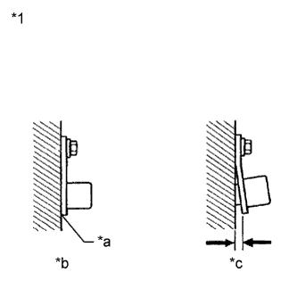
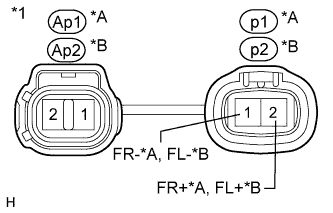
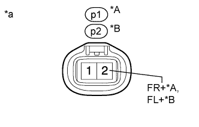

DTC C1413 Front Speed Sensor RH Output Malfunction |
DTC C1275 Abnormal Change in Output Signal of Front Speed Sensor RH (Test Mode DTC) |
DTC C1276 Abnormal Change in Output Signal of Front Speed Sensor LH (Test Mode DTC) |
DTC C1414 Front Speed Sensor LH Output Malfunction |
| DTC Code | DTC Detection Condition | Trouble Area |
| C1413 C1414 | One of the following conditions is met:
|
|
| C1275 C1276 | Stored only during test mode. |
|
| 1.CHECK HARNESS AND CONNECTOR (MOMENTARY INTERRUPTION) |
Using the intelligent tester, check for any momentary interruption in the wire harness and connector corresponding to the DTC (Click here).
| Tester Display | Measurement Item/Range | Normal Condition | Diagnostic Note |
| FR Speed Open | Front speed sensor RH open detection/ Error or Normal | Normal | - |
| FL Speed Open | Front speed sensor LH open detection/ Error or Normal | Normal | - |
|
| ||||
| OK | |
| 2.READ VALUE USING INTELLIGENT TESTER (FRONT SPEED SENSOR) |
Turn the engine switch off.
Connect the intelligent tester to the DLC3.
Start the engine.
Turn the intelligent tester on.
Enter the following menus: Chassis / ABS/VSC/TRC / Data List.
| Tester Display | Measurement Item/Range | Normal Condition | Diagnostic Note |
| FR Wheel Speed | Front wheel speed sensor RH reading/ Min.: 0 km/h (0 mph), Max.: 326 km/h (202 mph) | Actual wheel speed | No large fluctuations when driving at a constant speed. |
| FL Wheel Speed | Front wheel speed sensor LH reading/ Min.: 0 km/h (0 mph), Max.: 326 km/h (202 mph) | Actual wheel speed | No large fluctuations when driving at a constant speed. |
Check that there is no difference between the speed value output from the speed sensor displayed on the intelligent tester and the speed value displayed on the speedometer when driving the vehicle.
|
| ||||
| OK | |
| 3.PERFORM TEST MODE (SIGNAL CHECK) |
Turn the engine switch off.
Perform the sensor check in the Test Mode Procedure (Click here).
|
| ||||
| OK | |
| 4.RECONFIRM DTC |
Clear the DTCs (Click here).
Start the engine.
Drive the vehicle at a speed of 40 km/h (25 mph) or more for at least 60 seconds.
Check if the same DTC is output (Click here).
| Result | Proceed to |
| DTC is not output | A |
| DTC is output | B |
|
| ||||
| A | ||
| ||
| 5.CHECK FRONT SPEED SENSOR INSTALLATION |
Turn the engine switch off.
|  |
Check the speed sensor installation (Click here).
| *1 | Front Speed Sensor |
| *a | No clearance |
| *b | OK |
| *c | NG |
|
| ||||
| OK | |
| 6.INSPECT FRONT SPEED SENSOR TIP |
Remove the front speed sensor (Click here).
Check the speed sensor tip.
|
| ||||
| OK | |
| 7.INSPECT FRONT SPEED SENSOR ROTOR |
Remove the front axle with ABS rotor bearing assembly (Click here).
Check the speed sensor rotor.
|
| ||||
| OK | |
| 8.INSPECT SKID CONTROL SENSOR WIRE |
Remove the skid control sensor wire (Click here).
|  |
Measure the resistance according to the value(s) in the table below.
| Tester Connection | Condition | Specified Condition |
| Ap1-1 - p1-1 (FR-) | Always | Below 1 Ω |
| Ap1-2 - p1-2 (FR+) | Always | Below 1 Ω |
| Ap1-1 - Ap1-2 | Always | 10 kΩ or higher |
| Tester Connection | Condition | Specified Condition |
| Ap2-1 - p2-1 (FL-) | Always | Below 1 Ω |
| Ap2-2 - p2-2 (FL+) | Always | Below 1 Ω |
| Ap2-1 - Ap2-2 | Always | 10 kΩ or higher |
| *A | for RH |
| *B | for LH |
| *1 | Skid Control Sensor Wire |
|
| ||||
| OK | |
| 9.CHECK HARNESS AND CONNECTOR (SKID CONTROL ECU - FRONT SPEED SENSOR) |
Install the skid control sensor wire.
Disconnect the A7 skid control ECU connector.
Disconnect the p1 and/or p2 speed sensor connector.
Measure the resistance according to the value(s) in the table below.
| Tester Connection | Condition | Specified Condition |
| A7-3 (FR+) - p1-2 (FR+) | Always | Below 1 Ω |
| A7-3 (FR+) - Body ground | Always | 10 kΩ or higher |
| A7-17 (FR-) - p1-1 (FR-) | Always | Below 1 Ω |
| A7-17 (FR-) - Body ground | Always | 10 kΩ or higher |
| Tester Connection | Condition | Specified Condition |
| A7-18 (FL+) - p2-2 (FL+) | Always | Below 1 Ω |
| A7-18 (FL+) - Body ground | Always | 10 kΩ or higher |
| A7-4 (FL-) - p2-1 (FL-) | Always | Below 1 Ω |
| A7-4 (FL-) - Body ground | Always | 10 kΩ or higher |
|
| ||||
| OK | |
| 10.CHECK TERMINAL VOLTAGE (FR+, FL+) |
Disconnect the p1 and/or p2 speed sensor connector.
Connect the A7 skid control ECU connector.
|  |
Measure the voltage according to the value(s) in the table below.
| Tester Connection | Switch Condition | Specified Condition |
| p1-2 (FR+) - Body ground | Engine switch on (IG) | 11 to 14 V |
| Tester Connection | Switch Condition | Specified Condition |
| p2-2 (FL+) - Body ground | Engine switch on (IG) | 11 to 14 V |
| *A | for RH |
| *B | for LH |
| *a | Front view of wire harness connector (to Front Speed Sensor) |
|
| ||||
| OK | |
| 11.RECONFIRM DTC |
Clear the DTC (Click here).
Start the engine.
Drive the vehicle at a speed of 40 km/h (25 mph) or more for at least 60 seconds.
Check if the same DTC is output (Click here).
| Result | Proceed to |
| DTC is not output | A |
| DTC is output | B |
|
| ||||
| A | ||
| ||
| 12.REPLACE FRONT SPEED SENSOR |
Replace the front speed sensor (Click here).
| NEXT | |
| 13.RECONFIRM DTC |
Clear the DTC (Click here).
Start the engine.
Drive the vehicle at a speed of 40 km/h (25 mph) or more for at least 60 seconds.
Check if the same DTC is output (Click here).
| Result | Proceed to |
| DTC is not output | A |
| DTC is output | B |
|
| ||||
| A | ||
| ||